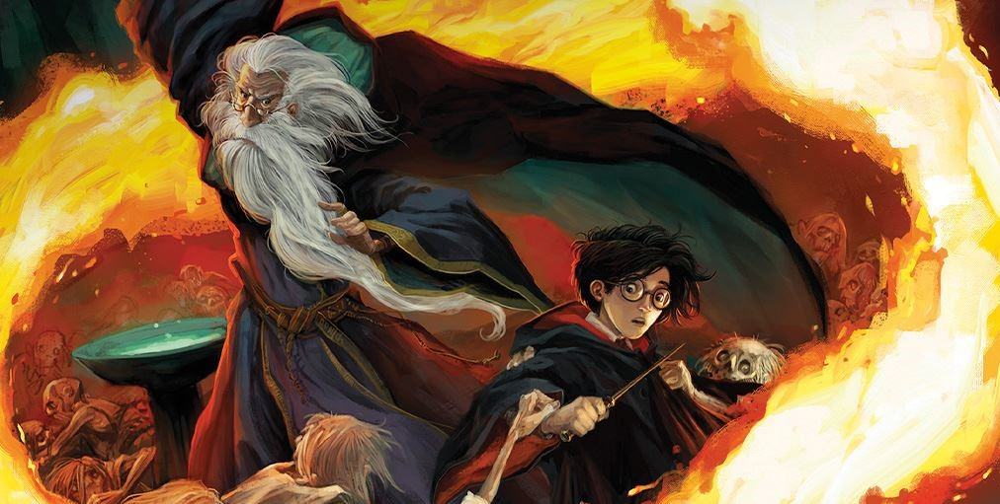

Albus Dumbledore and Harry Potter searching for one of the Voldemort's horrocruxes
Here's a time line of Harry Potter's life
1980
July 31: Harry James Potter born to Lily Evans Potter and James Potter.
1981
October 31: near midnight – Voldemort attempts to kill Harry Potter after murdering his parents,
but
his spell rebounds. Voldemort loses most of his powers and almost his life.
November 1, late evening: Hagrid delivers baby Harry to Dumbledore, who is waiting in Privet
Drive
to leave the baby with the Dursleys.
1991
July 24-30: letters begin arriving via owl post to invite Harry to Hogwarts.
July 31, just after midnight: Hagrid rescues Harry from the Dursleys and from the Hut on the
Rock.
1992
first week of June: Harry, Hermione, and Ron follow Quirrell after the Stone, overcome the
various
protections, and defeat Quirrell/Voldemort’s attempt to steal the Stone.